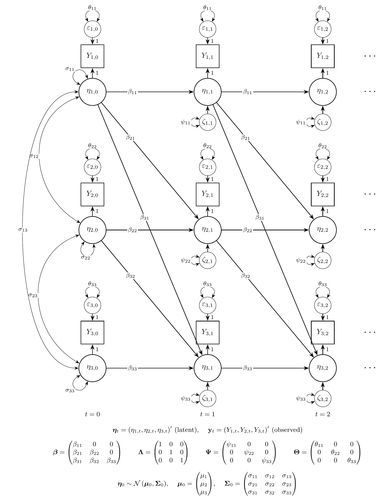
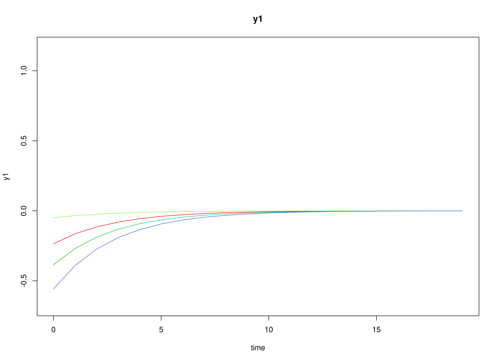
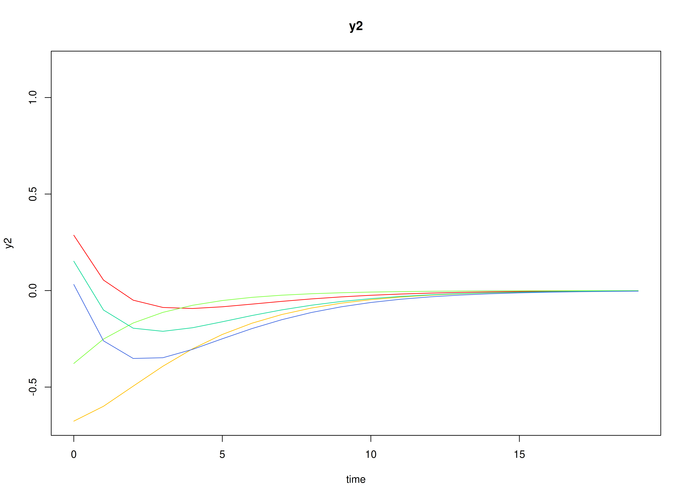
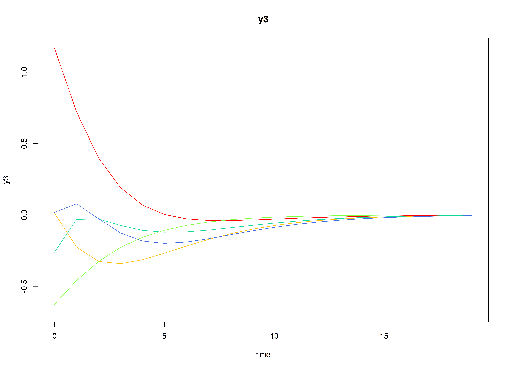
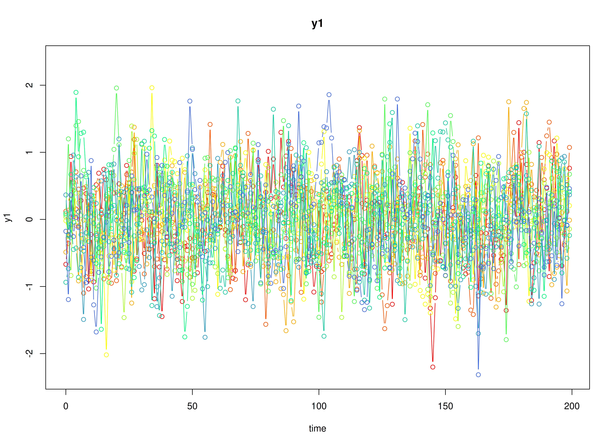
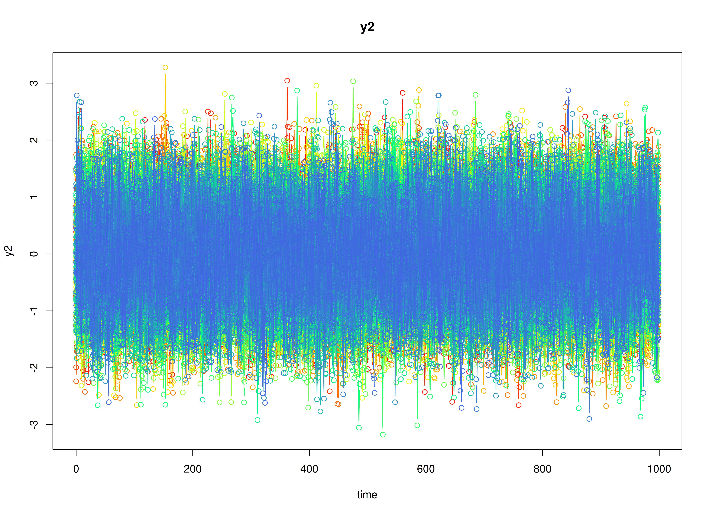
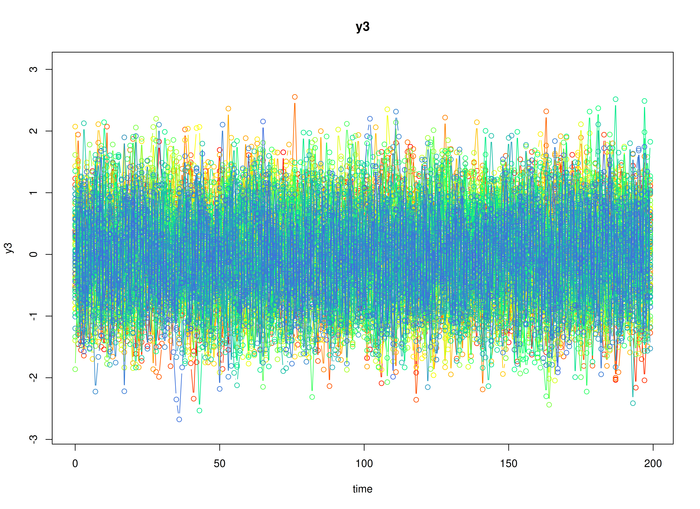
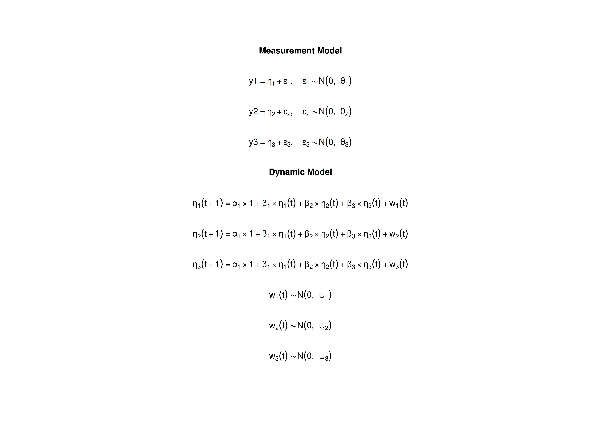

Overview
A state space model describes variables that we cannot observe directly (latent states) and how they change over time, using repeated, error-prone measurements of them. It has two parts: a measurement model that links the observed variables to the latent states, and a dynamic model that describes how the latent states carry over and influence each other from one occasion to the next.
This tutorial does three things:
- It writes a state space model with a first-order vector autoregressive dynamic model.
- It simulates data from the model with
SimSSMFixed(), with every individual sharing the same parameters. - It fits the model to the simulated data with the
dynrpackage and compares the estimates with the values used to simulate the data.
No prior knowledge of state space models is needed. If the model without measurement error is enough for you, see the vignette on the vector autoregressive model.
Model
The measurement model is given by \[\begin{equation} \mathbf{y}_{i, t} = \boldsymbol{\nu} + \boldsymbol{\Lambda} \boldsymbol{\eta}_{i, t} + \boldsymbol{\varepsilon}_{i, t}, \quad \mathrm{with} \quad \boldsymbol{\varepsilon}_{i, t} \sim \mathcal{N} \left( \mathbf{0}, \boldsymbol{\Theta} \right) \end{equation}\] where \(\mathbf{y}_{i, t}\), \(\boldsymbol{\eta}_{i, t}\), and \(\boldsymbol{\varepsilon}_{i, t}\) are random variables and \(\boldsymbol{\nu}\), \(\boldsymbol{\Lambda}\), and \(\boldsymbol{\Theta}\) are model parameters. \(\mathbf{y}_{i, t}\) represents a vector of observed random variables, \(\boldsymbol{\eta}_{i, t}\) a vector of latent random variables, and \(\boldsymbol{\varepsilon}_{i, t}\) a vector of random measurement errors, at time \(t\) and individual \(i\). \(\boldsymbol{\nu}\) denotes a vector of intercepts, \(\boldsymbol{\Lambda}\) a matrix of factor loadings, and \(\boldsymbol{\Theta}\) the covariance matrix of \(\boldsymbol{\varepsilon}\).
In words, each observed variable is an intercept plus a weighted combination of the latent variables plus measurement error. The latent variables \(\boldsymbol{\eta}_{i, t}\) are the quantities we care about (for example, a person’s true stress level), and the observed variables \(\mathbf{y}_{i, t}\) are noisy measurements of them. Separating measurement error from true change is the main reason to use a state space model: measurement error affects only the occasion it occurs on, while changes in the latent variables carry over in time.
An alternative representation of the measurement error is given by \[\begin{equation} \boldsymbol{\varepsilon}_{i, t} = \boldsymbol{\Theta}^{\frac{1}{2}} \mathbf{z}_{i, t}, \quad \mathrm{with} \quad \mathbf{z}_{i, t} \sim \mathcal{N} \left( \mathbf{0}, \mathbf{I} \right) \end{equation}\] where \(\mathbf{z}_{i, t}\) is a vector of independent standard normal random variables and \(\left( \boldsymbol{\Theta}^{\frac{1}{2}} \right) \left( \boldsymbol{\Theta}^{\frac{1}{2}} \right)^{\prime} = \boldsymbol{\Theta}\) .
The dynamic structure is given by \[\begin{equation} \boldsymbol{\eta}_{i, t} = \boldsymbol{\alpha} + \boldsymbol{\beta} \boldsymbol{\eta}_{i, t - 1} + \boldsymbol{\zeta}_{i, t}, \quad \mathrm{with} \quad \boldsymbol{\zeta}_{i, t} \sim \mathcal{N} \left( \mathbf{0}, \boldsymbol{\Psi} \right) \end{equation}\] where \(\boldsymbol{\eta}_{i, t}\), \(\boldsymbol{\eta}_{i, t - 1}\), and \(\boldsymbol{\zeta}_{i, t}\) are random variables, and \(\boldsymbol{\alpha}\), \(\boldsymbol{\beta}\), and \(\boldsymbol{\Psi}\) are model parameters. Here, \(\boldsymbol{\eta}_{i, t}\) is a vector of latent variables at time \(t\) and individual \(i\), \(\boldsymbol{\eta}_{i, t - 1}\) represents a vector of latent variables at time \(t - 1\) and individual \(i\), and \(\boldsymbol{\zeta}_{i, t}\) represents a vector of dynamic noise at time \(t\) and individual \(i\). \(\boldsymbol{\alpha}\) denotes a vector of intercepts, \(\boldsymbol{\beta}\) a matrix of autoregression and cross regression coefficients, and \(\boldsymbol{\Psi}\) the covariance matrix of \(\boldsymbol{\zeta}_{i, t}\).
In words, each latent variable at time \(t\) is a weighted sum of all the latent variables at time \(t - 1\), plus an intercept and a random shock. The weights are the elements of \(\boldsymbol{\beta}\):
- A diagonal element \(\beta_{jj}\) is the autoregressive effect, how much of variable \(j\) carries over to the next occasion. Values closer to 1 mean the variable changes slowly (high inertia).
- An off-diagonal element \(\beta_{jk}\) is the cross-lagged effect of variable \(k\) at time \(t - 1\) on variable \(j\) at time \(t\). Note the order: the row is the outcome, the column is the predictor.
The shocks \(\boldsymbol{\zeta}_{i, t}\) stand for everything that moves the latent variables that the model does not explain. Unlike measurement error, a shock carries over to later occasions through \(\boldsymbol{\beta}\). For the process to settle around a stable mean, all eigenvalues of \(\boldsymbol{\beta}\) must have modulus less than 1.
An alternative representation of the dynamic noise is given by \[\begin{equation}
\boldsymbol{\zeta}_{i, t}
=
\boldsymbol{\Psi}^{\frac{1}{2}}
\mathbf{z}_{i, t},
\quad
\mathrm{with}
\quad
\mathbf{z}_{i, t}
\sim
\mathcal{N}
\left(
\mathbf{0},
\mathbf{I}
\right)
\end{equation}\] where \(\left(
\boldsymbol{\Psi}^{\frac{1}{2}} \right) \left(
\boldsymbol{\Psi}^{\frac{1}{2}} \right)^{\prime} =
\boldsymbol{\Psi}\) . This is how both kinds of noise are
simulated: independent standard normal draws are multiplied by a square
root of the covariance matrix. The functions in
simStateSpace take this square root, the lower triangular
Cholesky factor, as the arguments psi_l (for \(\boldsymbol{\Psi}\)) and
theta_l (for \(\boldsymbol{\Theta}\)).
Diagrams

The model as a path diagram, for the first three occasions. Squares are observed variables and circles are latent variables. Each latent variable \(\eta_{j}\) has one indicator \(y_{j}\) with a loading of 1 and measurement error \(\varepsilon_{j}\) with variance \(\theta_{jj}\). The horizontal arrows are the autoregressive effects and the diagonal arrows the cross-lagged effects; only the nonzero elements of \(\boldsymbol{\beta}\) in this example are drawn (\(\eta_{1}\) affects \(\eta_{2}\) and \(\eta_{3}\), and \(\eta_{2}\) affects \(\eta_{3}\)). \(\zeta_{j}\) is the process noise, with variance \(\psi_{jj}\), and the curved arrows on the left are the covariances of the latent variables at the first occasion.

The same model in state space form. All the latent variables at one
occasion form the state vector \(\boldsymbol{\eta}_{t}\), and all the
observed variables form \(\mathbf{y}_{t}\). \(\boldsymbol{\beta}\) carries the state from
one occasion to the next, \(\boldsymbol{\Lambda}\) maps the state to
the observed variables, \(\boldsymbol{\Psi}\) is the covariance
matrix of the process noise \(\boldsymbol{\zeta}_{t}\), and \(\boldsymbol{\Theta}\) the covariance matrix
of the measurement error \(\boldsymbol{\varepsilon}_{t}\).
SimSSMFixed() takes beta, lambda,
and the Cholesky factors of \(\boldsymbol{\Psi}\) and \(\boldsymbol{\Theta}\) (psi_l
and theta_l).
Data Generation
Notation
Let \(t = 200\) be the number of time points and \(n = 10\) be the number of individuals.
Let the measurement model intercept vector \(\boldsymbol{\nu}\) be given by
\[\begin{equation} \boldsymbol{\nu} = \left( \begin{array}{c} 0 \\ 0 \\ 0 \\ \end{array} \right) . \end{equation}\]
Let the factor loadings matrix \(\boldsymbol{\Lambda}\) be given by
\[\begin{equation} \boldsymbol{\Lambda} = \left( \begin{array}{ccc} 1 & 0 & 0 \\ 0 & 1 & 0 \\ 0 & 0 & 1 \\ \end{array} \right) . \end{equation}\]
Let the measurement error covariance matrix \(\boldsymbol{\Theta}\) be given by
\[\begin{equation} \boldsymbol{\Theta} = \left( \begin{array}{ccc} 0.2 & 0 & 0 \\ 0 & 0.2 & 0 \\ 0 & 0 & 0.2 \\ \end{array} \right) . \end{equation}\]
With \(\boldsymbol{\nu} = \mathbf{0}\) and \(\boldsymbol{\Lambda} = \mathbf{I}\), each observed variable measures one latent variable, and \(\boldsymbol{\Theta}\) adds measurement error with variance 0.2 to each.
Let the initial condition \(\boldsymbol{\eta}_{0}\) be given by
\[\begin{equation} \boldsymbol{\eta}_{0} \sim \mathcal{N} \left( \boldsymbol{\mu}_{\boldsymbol{\eta} \mid 0}, \boldsymbol{\Sigma}_{\boldsymbol{\eta} \mid 0} \right) \end{equation}\]
\[\begin{equation} \boldsymbol{\mu}_{\boldsymbol{\eta} \mid 0} = \left( \begin{array}{c} 0 \\ 0 \\ 0 \\ \end{array} \right) \end{equation}\]
\[\begin{equation} \boldsymbol{\Sigma}_{\boldsymbol{\eta} \mid 0} = \left( \begin{array}{ccc} 0.1960784 & 0.1183232 & 0.0298539 \\ 0.1183232 & 0.3437711 & 0.1381855 \\ 0.0298539 & 0.1381855 & 0.2663828 \\ \end{array} \right) . \end{equation}\]
Let the constant vector \(\boldsymbol{\alpha}\) be given by
\[\begin{equation} \boldsymbol{\alpha} = \left( \begin{array}{c} 0 \\ 0 \\ 0 \\ \end{array} \right) . \end{equation}\]
Let the transition matrix \(\boldsymbol{\beta}\) be given by
\[\begin{equation} \boldsymbol{\beta} = \left( \begin{array}{ccc} 0.7 & 0 & 0 \\ 0.5 & 0.6 & 0 \\ -0.1 & 0.4 & 0.5 \\ \end{array} \right) . \end{equation}\]
Read the columns as predictors and the rows as outcomes. Each variable carries over to the next occasion (autoregressive effects 0.7, 0.6, and 0.5). In addition, \(\eta_{1}\) predicts later \(\eta_{2}\) (0.5), \(\eta_{2}\) predicts later \(\eta_{3}\) (0.4), and \(\eta_{1}\) has a small negative effect on later \(\eta_{3}\) (-0.1). Because \(\boldsymbol{\beta}\) is lower triangular, its eigenvalues are its diagonal elements, all less than 1, so the process is stable.
Let the dynamic process noise \(\boldsymbol{\Psi}\) be given by
\[\begin{equation} \boldsymbol{\Psi} = \left( \begin{array}{ccc} 0.1 & 0 & 0 \\ 0 & 0.1 & 0 \\ 0 & 0 & 0.1 \\ \end{array} \right) . \end{equation}\]
The initial condition describes where each individual starts. Here,
the mean vector and covariance matrix of \(\boldsymbol{\eta}_{0}\) are the
model-implied mean and covariance of the stable process, computed with
SSMMeanEta() and SSMCovEta(), so the data are
stationary from the first time point.
R Function Arguments
The simulation functions take covariance matrices as lower triangular
Cholesky factors (the arguments ending in _l).
n
#> [1] 10
time
#> [1] 200
mu0
#> [1] 0 0 0
sigma0
#> [,1] [,2] [,3]
#> [1,] 0.19607843 0.1183232 0.02985385
#> [2,] 0.11832319 0.3437711 0.13818551
#> [3,] 0.02985385 0.1381855 0.26638284
sigma0_l # sigma0_l <- t(chol(sigma0))
#> [,1] [,2] [,3]
#> [1,] 0.44280744 0.0000000 0.000000
#> [2,] 0.26721139 0.5218900 0.000000
#> [3,] 0.06741949 0.2302597 0.456966
alpha
#> [1] 0 0 0
beta
#> [,1] [,2] [,3]
#> [1,] 0.7 0.0 0.0
#> [2,] 0.5 0.6 0.0
#> [3,] -0.1 0.4 0.5
psi
#> [,1] [,2] [,3]
#> [1,] 0.1 0.0 0.0
#> [2,] 0.0 0.1 0.0
#> [3,] 0.0 0.0 0.1
psi_l # psi_l <- t(chol(psi))
#> [,1] [,2] [,3]
#> [1,] 0.3162278 0.0000000 0.0000000
#> [2,] 0.0000000 0.3162278 0.0000000
#> [3,] 0.0000000 0.0000000 0.3162278
nu
#> [1] 0 0 0
lambda
#> [,1] [,2] [,3]
#> [1,] 1 0 0
#> [2,] 0 1 0
#> [3,] 0 0 1
theta
#> [,1] [,2] [,3]
#> [1,] 0.2 0.0 0.0
#> [2,] 0.0 0.2 0.0
#> [3,] 0.0 0.0 0.2
theta_l # theta_l <- t(chol(theta))
#> [,1] [,2] [,3]
#> [1,] 0.4472136 0.0000000 0.0000000
#> [2,] 0.0000000 0.4472136 0.0000000
#> [3,] 0.0000000 0.0000000 0.4472136Visualizing the Dynamics Without Process Noise (n = 5 with Different Initial Condition)
To see what \(\boldsymbol{\beta}\) alone does, we first simulate five individuals with the process noise and the measurement error set to zero. Each individual starts at a different point, and the trajectories return to the mean at a speed set by \(\boldsymbol{\beta}\).



Using the SimSSMFixed Function from the
simStateSpace Package to Simulate Data
Now we add the process noise and the measurement error and simulate
the full data set. as.data.frame() returns the data in long
format, one row per individual and time point, with the columns
id, time, y1, y2,
and y3.
library(simStateSpace)
sim <- SimSSMFixed(
n = n,
time = time,
mu0 = mu0,
sigma0_l = sigma0_l,
alpha = alpha,
beta = beta,
psi_l = psi_l,
nu = nu,
lambda = lambda,
theta_l = theta_l,
type = 0
)
data <- as.data.frame(sim)
head(data)
#> id time y1 y2 y3
#> 1 1 0 -0.66908807 0.16178434 0.2955693
#> 2 1 1 -0.23021811 0.22873073 -0.2540210
#> 3 1 2 0.93689389 0.09496693 -0.9267506
#> 4 1 3 0.04445794 0.67521289 -0.1792168
#> 5 1 4 0.15413707 0.82591676 0.8976536
#> 6 1 5 -0.09943698 0.67154173 0.2853507
summary(data)
#> id time y1 y2
#> Min. : 1.0 Min. : 0.00 Min. :-2.315283 Min. :-2.092224
#> 1st Qu.: 3.0 1st Qu.: 49.75 1st Qu.:-0.419229 1st Qu.:-0.486763
#> Median : 5.5 Median : 99.50 Median : 0.004236 Median : 0.034591
#> Mean : 5.5 Mean : 99.50 Mean :-0.002387 Mean : 0.008276
#> 3rd Qu.: 8.0 3rd Qu.:149.25 3rd Qu.: 0.414362 3rd Qu.: 0.499517
#> Max. :10.0 Max. :199.00 Max. : 1.961879 Max. : 2.398964
#> y3
#> Min. :-2.34002
#> 1st Qu.:-0.41118
#> Median : 0.02153
#> Mean : 0.02317
#> 3rd Qu.: 0.45024
#> Max. : 1.94049
plot(sim)


Model Fitting
We fit the model with dynr, which estimates state space
models by maximum likelihood using the Kalman filter. The Kalman filter
estimates the latent states occasion by occasion, weighing the model’s
prediction against the new measurement.
A dynr model is built from pieces that match the
equations above: the data, the initial condition, the measurement model,
the dynamic model, and the noise. Each parameter gets a name (for
example, beta_2_1 for \(\beta_{21}\)`), and the same name used in
two places means one shared parameter. The starting values are set to
the population values for convenience; with real data, they would be
rough guesses.
Prepare Initial Condition
The mean \(\boldsymbol{\mu}_{\boldsymbol{\eta} \mid
0}\) and covariance \(\boldsymbol{\Sigma}_{\boldsymbol{\eta} \mid
0}\) of the initial state are estimated. The covariance matrix is
symmetric, so sigma0_2_1 appears both above and below the
diagonal.
dynr_initial <- dynr::prep.initial(
values.inistate = mu0,
params.inistate = c("mu0_1_1", "mu0_2_1", "mu0_3_1"),
values.inicov = sigma0,
params.inicov = matrix(
data = c(
"sigma0_1_1", "sigma0_2_1", "sigma0_3_1",
"sigma0_2_1", "sigma0_2_2", "sigma0_3_2",
"sigma0_3_1", "sigma0_3_2", "sigma0_3_3"
),
nrow = 3
)
)Prepare Measurement Model
The loadings \(\boldsymbol{\Lambda}\) are an identity
matrix with no free parameters ("fixed").
dynr_measurement <- dynr::prep.measurement(
values.load = diag(3),
params.load = matrix(data = "fixed", nrow = 3, ncol = 3),
state.names = c("eta_1", "eta_2", "eta_3"),
obs.names = c("y1", "y2", "y3")
)Prepare Dynamic Process
Each formula is one row of the dynamic equation: the intercept \(\alpha_{j}\) plus the effects \(\beta_{jk}\) of the three latent variables
at the previous occasion. isContinuousTime = FALSE makes
this a discrete-time model.
dynr_dynamics <- dynr::prep.formulaDynamics(
formula = list(
eta_1 ~ alpha_1_1 * 1 + beta_1_1 * eta_1 + beta_1_2 * eta_2 + beta_1_3 * eta_3,
eta_2 ~ alpha_2_1 * 1 + beta_2_1 * eta_1 + beta_2_2 * eta_2 + beta_2_3 * eta_3,
eta_3 ~ alpha_3_1 * 1 + beta_3_1 * eta_1 + beta_3_2 * eta_2 + beta_3_3 * eta_3
),
startval = c(
alpha_1_1 = alpha[1], alpha_2_1 = alpha[2], alpha_3_1 = alpha[3],
beta_1_1 = beta[1, 1], beta_1_2 = beta[1, 2], beta_1_3 = beta[1, 3],
beta_2_1 = beta[2, 1], beta_2_2 = beta[2, 2], beta_2_3 = beta[2, 3],
beta_3_1 = beta[3, 1], beta_3_2 = beta[3, 2], beta_3_3 = beta[3, 3]
),
isContinuousTime = FALSE
)Prepare Process Noise
The process noise covariance \(\boldsymbol{\Psi}\) is estimated in full. The measurement error covariance \(\boldsymbol{\Theta}\) is diagonal: the three error variances are estimated, and the error covariances are fixed at zero.
dynr_noise <- dynr::prep.noise(
values.latent = psi,
params.latent = matrix(
data = c(
"psi_1_1", "psi_2_1", "psi_3_1",
"psi_2_1", "psi_2_2", "psi_3_2",
"psi_3_1", "psi_3_2", "psi_3_3"
),
nrow = 3
),
values.observed = theta,
params.observed = matrix(
data = c(
"theta_1_1", "fixed", "fixed",
"fixed", "theta_2_2", "fixed",
"fixed", "fixed", "theta_3_3"
),
nrow = 3
)
)Prepare the Model
The pieces are put together into one model. dynr writes
the model as C code to outfile and compiles it.
model <- dynr::dynr.model(
data = dynr_data,
initial = dynr_initial,
measurement = dynr_measurement,
dynamics = dynr_dynamics,
noise = dynr_noise,
outfile = "ssm.c"
)The plot below shows the model equations with the parameter names.

Fit the Model
results <- dynr::dynr.cook(
model,
debug_flag = TRUE,
verbose = FALSE
)
#> [1] "Get ready!!!!"
#> using C compiler: ‘gcc (Ubuntu 15.2.0-16ubuntu1) 15.2.0’
#> Optimization function called.
#> Starting Hessian calculation ...
#> Finished Hessian calculation.
#> Original exit flag: 3
#> Modified exit flag: 3
#> Optimization terminated successfully: ftol_rel or ftol_abs was reached.
#> Original fitted parameters: 0.0005368551 0.008235204 0.01013316 0.6868813
#> 0.001730167 0.002913753 0.4675764 0.5965132 -0.02147487 -0.05326514 0.392605
#> 0.4365367 -2.256573 0.02711671 -0.1489293 -2.151777 0.006419125 -2.127149
#> -1.660823 -1.662211 -1.8253 -0.1725023 -0.5161966 -0.02439533 -3.778195
#> 0.2891854 -0.07200612 -1.639686 -0.8167291 -4.247308
#>
#> Transformed fitted parameters: 0.0005368551 0.008235204 0.01013316 0.6868813
#> 0.001730167 0.002913753 0.4675764 0.5965132 -0.02147487 -0.05326514 0.392605
#> 0.4365367 0.1047087 0.002839356 -0.0155942 0.1163543 0.0003235351 0.1215038
#> 0.1899826 0.1897191 0.1611693 -0.1725023 -0.5161966 -0.02439533 0.02286392
#> 0.006611912 -0.001646342 0.195953 -0.158955 0.1438555
#>
#> Doing end processing
#> Warning in sqrt(diag(iHess)): NaNs produced
#> Warning in sqrt(diag(x$inv.hessian)): NaNs produced
#> Warning: These parameters may have untrustworthy standard errors: sigma0_2_1,
#> sigma0_3_1.
#> Total Time: 27.24204
#> Backend Time: 26.87385Summary
The summary lists each estimate with its standard error, \(t\) value, confidence interval, and \(p\) value.
summary(results)
#> Coefficients:
#> Estimate Std. Error t value ci.lower ci.upper
#> alpha_1_1 0.0005369 0.0079154 0.068 -0.0149770 0.0160508
#> alpha_2_1 0.0082352 0.0097799 0.842 -0.0109331 0.0274035
#> alpha_3_1 0.0101332 0.0101409 0.999 -0.0097426 0.0300090
#> beta_1_1 0.6868813 0.0721791 9.516 0.5454127 0.8283498
#> beta_1_2 0.0017302 0.0446783 0.039 -0.0858378 0.0892981
#> beta_1_3 0.0029138 0.0324108 0.090 -0.0606103 0.0664378
#> beta_2_1 0.4675764 0.0668180 6.998 0.3366156 0.5985372
#> beta_2_2 0.5965132 0.0516820 11.542 0.4952182 0.6978081
#> beta_2_3 -0.0214749 0.0370979 -0.579 -0.0941854 0.0512356
#> beta_3_1 -0.0532651 0.0548683 -0.971 -0.1608050 0.0542747
#> beta_3_2 0.3926050 0.0585108 6.710 0.2779260 0.5072840
#> beta_3_3 0.4365367 0.0611277 7.141 0.3167286 0.5563448
#> psi_1_1 0.1047087 0.0234714 4.461 0.0587057 0.1507118
#> psi_2_1 0.0028394 0.0077805 0.365 -0.0124102 0.0180889
#> psi_3_1 -0.0155942 0.0073864 -2.111 -0.0300713 -0.0011171
#> psi_2_2 0.1163543 0.0203383 5.721 0.0764920 0.1562166
#> psi_3_2 0.0003235 0.0074875 0.043 -0.0143517 0.0149988
#> psi_3_3 0.1215038 0.0290534 4.182 0.0645602 0.1784475
#> theta_1_1 0.1899826 0.0193318 9.827 0.1520929 0.2278722
#> theta_2_2 0.1897191 0.0193088 9.826 0.1518746 0.2275636
#> theta_3_3 0.1611693 0.0282204 5.711 0.1058583 0.2164803
#> mu0_1_1 -0.1725023 0.1212377 -1.423 -0.4101238 0.0651191
#> mu0_2_1 -0.5161966 0.1843022 -2.801 -0.8774223 -0.1549710
#> mu0_3_1 -0.0243953 0.1718595 -0.142 -0.3612338 0.3124431
#> sigma0_1_1 0.0228639 0.0598445 0.382 -0.0944292 0.1401571
#> sigma0_2_1 0.0066119 NaN NA NaN NaN
#> sigma0_3_1 -0.0016463 NaN NA NaN NaN
#> sigma0_2_2 0.1959530 0.1518049 1.291 -0.1015792 0.4934852
#> sigma0_3_2 -0.1589550 0.1135795 -1.400 -0.3815667 0.0636568
#> sigma0_3_3 0.1438555 0.1382930 1.040 -0.1271937 0.4149048
#> Pr(>|t|)
#> alpha_1_1 0.4730
#> alpha_2_1 0.1999
#> alpha_3_1 0.1589
#> beta_1_1 <0.0000000000000002 ***
#> beta_1_2 0.4846
#> beta_1_3 0.4642
#> beta_2_1 <0.0000000000000002 ***
#> beta_2_2 <0.0000000000000002 ***
#> beta_2_3 0.2814
#> beta_3_1 0.1659
#> beta_3_2 <0.0000000000000002 ***
#> beta_3_3 <0.0000000000000002 ***
#> psi_1_1 <0.0000000000000002 ***
#> psi_2_1 0.3576
#> psi_3_1 0.0174 *
#> psi_2_2 <0.0000000000000002 ***
#> psi_3_2 0.4828
#> psi_3_3 <0.0000000000000002 ***
#> theta_1_1 <0.0000000000000002 ***
#> theta_2_2 <0.0000000000000002 ***
#> theta_3_3 <0.0000000000000002 ***
#> mu0_1_1 0.0775 .
#> mu0_2_1 0.0026 **
#> mu0_3_1 0.4436
#> sigma0_1_1 0.3512
#> sigma0_2_1 NA
#> sigma0_3_1 NA
#> sigma0_2_2 0.0985 .
#> sigma0_3_2 0.0809 .
#> sigma0_3_3 0.1492
#> ---
#> Signif. codes: 0 '***' 0.001 '**' 0.01 '*' 0.05 '.' 0.1 ' ' 1
#>
#> -2 log-likelihood value at convergence = 10423.49
#> AIC = 10483.49
#> BIC = 10651.52Parameter Estimates
The estimates arranged as the matrices in the model, to compare with the population values in the Data Generation section.
alpha_hat
#> [1] 0.0005368551 0.0082352037 0.0101331642
beta_hat
#> [,1] [,2] [,3]
#> [1,] 0.68688127 0.001730167 0.002913753
#> [2,] 0.46757639 0.596513193 -0.021474870
#> [3,] -0.05326514 0.392605011 0.436536738
psi_hat
#> [,1] [,2] [,3]
#> [1,] 0.104708722 0.0028393563 -0.0155942012
#> [2,] 0.002839356 0.1163543003 0.0003235351
#> [3,] -0.015594201 0.0003235351 0.1215038284
theta_hat
#> [,1] [,2] [,3]
#> [1,] 0.1899826 0.0000000 0.0000000
#> [2,] 0.0000000 0.1897191 0.0000000
#> [3,] 0.0000000 0.0000000 0.1611693
mu0_hat
#> [1] -0.17250235 -0.51619664 -0.02439533
sigma0_hat
#> [,1] [,2] [,3]
#> [1,] 0.022863918 0.006611912 -0.001646342
#> [2,] 0.006611912 0.195953006 -0.158954972
#> [3,] -0.001646342 -0.158954972 0.143855539Table of Parameters and Estimates
The table below puts each population value used to simulate the data
next to its estimate. Bias is the estimate minus the population value.
Because the model is fitted to a single simulated data set, this is the
error of one estimate, not a Monte Carlo bias, which would average over
many replications. The 95% confidence interval is the Wald interval,
\(\hat{\theta} \pm 1.96 \times
\mathrm{SE}\), and Covers shows whether it contains
the population value.
EstimatesTable <- function(population, estimate, se) {
z <- stats::qnorm(p = 0.975)
ll <- estimate - z * se
ul <- estimate + z * se
data.frame(
Parameter = names(population),
Population = unname(population),
Estimate = unname(estimate),
SE = unname(se),
Bias = unname(estimate - population),
`2.5%` = unname(ll),
`97.5%` = unname(ul),
Covers = unname(population >= ll & population <= ul),
check.names = FALSE
)
}
estimates <- coef(results)
se <- sqrt(diag(vcov(results)))
#> Warning in sqrt(diag(vcov(results))): NaNs produced
# the population value for each dynr parameter name,
# for example, "beta_1_2" is beta[1, 2] and "mu0_2_1" is mu0[2]
population <- vapply(
X = strsplit(x = names(estimates), split = "_"),
FUN = function(x) {
as.matrix(get(x[1]))[as.integer(x[2]), as.integer(x[3])]
},
FUN.VALUE = numeric(1)
)
names(population) <- names(estimates)
knitr::kable(
x = EstimatesTable(
population = population,
estimate = estimates,
se = se
),
digits = 3,
caption = "Population values and dynr estimates (one simulated data set)"
)| Parameter | Population | Estimate | SE | Bias | 2.5% | 97.5% | Covers |
|---|---|---|---|---|---|---|---|
| alpha_1_1 | 0.000 | 0.001 | 0.008 | 0.001 | -0.015 | 0.016 | TRUE |
| alpha_2_1 | 0.000 | 0.008 | 0.010 | 0.008 | -0.011 | 0.027 | TRUE |
| alpha_3_1 | 0.000 | 0.010 | 0.010 | 0.010 | -0.010 | 0.030 | TRUE |
| beta_1_1 | 0.700 | 0.687 | 0.072 | -0.013 | 0.545 | 0.828 | TRUE |
| beta_1_2 | 0.000 | 0.002 | 0.045 | 0.002 | -0.086 | 0.089 | TRUE |
| beta_1_3 | 0.000 | 0.003 | 0.032 | 0.003 | -0.061 | 0.066 | TRUE |
| beta_2_1 | 0.500 | 0.468 | 0.067 | -0.032 | 0.337 | 0.599 | TRUE |
| beta_2_2 | 0.600 | 0.597 | 0.052 | -0.003 | 0.495 | 0.698 | TRUE |
| beta_2_3 | 0.000 | -0.021 | 0.037 | -0.021 | -0.094 | 0.051 | TRUE |
| beta_3_1 | -0.100 | -0.053 | 0.055 | 0.047 | -0.161 | 0.054 | TRUE |
| beta_3_2 | 0.400 | 0.393 | 0.059 | -0.007 | 0.278 | 0.507 | TRUE |
| beta_3_3 | 0.500 | 0.437 | 0.061 | -0.063 | 0.317 | 0.556 | TRUE |
| psi_1_1 | 0.100 | 0.105 | 0.023 | 0.005 | 0.059 | 0.151 | TRUE |
| psi_2_1 | 0.000 | 0.003 | 0.008 | 0.003 | -0.012 | 0.018 | TRUE |
| psi_3_1 | 0.000 | -0.016 | 0.007 | -0.016 | -0.030 | -0.001 | FALSE |
| psi_2_2 | 0.100 | 0.116 | 0.020 | 0.016 | 0.076 | 0.156 | TRUE |
| psi_3_2 | 0.000 | 0.000 | 0.007 | 0.000 | -0.014 | 0.015 | TRUE |
| psi_3_3 | 0.100 | 0.122 | 0.029 | 0.022 | 0.065 | 0.178 | TRUE |
| theta_1_1 | 0.200 | 0.190 | 0.019 | -0.010 | 0.152 | 0.228 | TRUE |
| theta_2_2 | 0.200 | 0.190 | 0.019 | -0.010 | 0.152 | 0.228 | TRUE |
| theta_3_3 | 0.200 | 0.161 | 0.028 | -0.039 | 0.106 | 0.216 | TRUE |
| mu0_1_1 | 0.000 | -0.173 | 0.121 | -0.173 | -0.410 | 0.065 | TRUE |
| mu0_2_1 | 0.000 | -0.516 | 0.184 | -0.516 | -0.877 | -0.155 | FALSE |
| mu0_3_1 | 0.000 | -0.024 | 0.172 | -0.024 | -0.361 | 0.312 | TRUE |
| sigma0_1_1 | 0.196 | 0.023 | 0.060 | -0.173 | -0.094 | 0.140 | FALSE |
| sigma0_2_1 | 0.118 | 0.007 | NaN | -0.112 | NaN | NaN | NA |
| sigma0_3_1 | 0.030 | -0.002 | NaN | -0.032 | NaN | NaN | NA |
| sigma0_2_2 | 0.344 | 0.196 | 0.152 | -0.148 | -0.102 | 0.493 | TRUE |
| sigma0_3_2 | 0.138 | -0.159 | 0.114 | -0.297 | -0.382 | 0.064 | FALSE |
| sigma0_3_3 | 0.266 | 0.144 | 0.138 | -0.123 | -0.127 | 0.415 | TRUE |